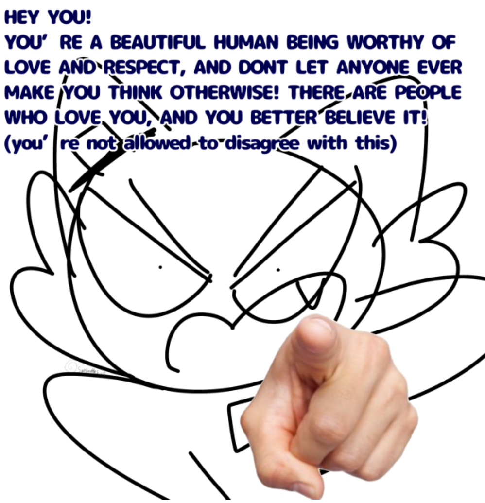

This is the idea playground, where my undeveloped ideas go to fight play.


I like Pokémon! I like it for the games (which are fun) and the world/characters (which are creative and cute). The animes are also neat.
My favourite character is Rosa (from Black 2 and White 2).
what if I learned sword crafting and made my own sword and practiced slashing and cutting suspended pieces of paper and got pretty good at it and felt accomplished both physically and mentally by having the discipline to take on a physical hobby


A modern religious movement, where I am the most well-studied scholar.
| deity/angel/spirit: | Porta, goddess of rice |
|---|---|
| temples: | made in Minecraft |
| scripture: |
Even if people disagree with you, that is no reason to explode at them or hate them.
